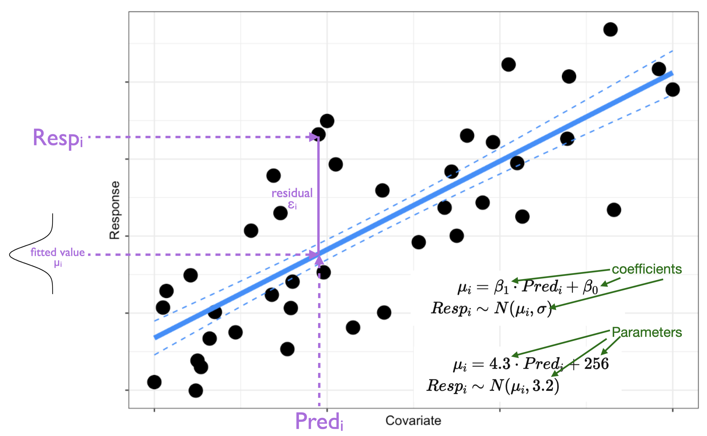
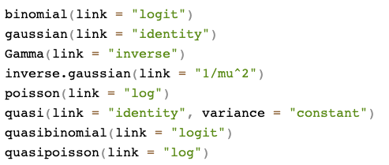

library(palmerpenguins) # loading palmer penguins data
library(GGally) # loading GGally package
library(dplyr) # loading dplyr package for select()
myDat<-select(penguins, bill_length_mm, body_mass_g, species) # select a subset of columns to plot. These would be your response and predictor columns
ggpairs(data=myDat, # your data
mapping=aes(col=species), # ggpairs will plot all columns in myDat, so we only need to tell it here any grouping variables we also want to include
upper="blank" # keep the upper triangle of plots blank for this simple example. Check ?ggpairs for more options.
)Statistical Modelling: Starting Model
In this section you will:
learn why you need a starting model to test your hypothesis
learn what model fitting means
choose and fit a starting model to start testing your hypothesis
take a first look at your fitted starting model
Your Starting Model
To test your hypothesis, you first need to build an appropriate model of your hypothesis in mathematical form. The model gives you a structure to which you can fit your data so that you can assess what the evidence (data) is saying about your hypothesis. This is called a statistical model as the model is fit by estimating parameters from the data (your observations).
Some useful terms
Response - the variable you are trying to explain.
Predictor(s) - the variable(s) you believe are explaining the variation in your response.
Parameters - values needed to be estimated when you fit your model (e.g. slope, intercept). These represent the effects of your predictors on your response.
Coefficients - the estimates of your parameters made when you fit your model.
Fitted values - these are the model’s estimate of the response at each of your predictor values.
Residuals - these are a measure of the error: the difference between your observations and the fitted values

Why do you need a starting model?

Imagine your research hypothesis is:
Response ~ Predictor + 1
where you are hypothesizing that
variability in
Responseis explained by variability inPredictor.
This can be tested by determining the evidence for an effect of Predictor on your Response. An effect means that we get a change in Response when we observe a change in Predictor.
In fitting your model, you will be estimating the effect of Predictor on Response - the magnitude and direction of the effect, as well as an estimate of the uncertainty (error) in the effect.
Effects are coefficients
When we say that a predictor has “an effect” on a response, we are saying that a change in the predictor leads to a change in the response.
This change in the response that comes from a unit change in the predictor is estimated as a coefficient.
The coefficient of a continuous predictor is the slope. The slope describes the change in response that you get from a unit change in the predictor. For example, if your hypothesis is Growth ~ Temperature + 1, (and Temperature is continuous), the slope (coefficient) for Temperature will tell you the change in Growth you expect for a 1˚C change in Temperature.
The coefficient of a categorical predictor tells you how much the response will change when the categorical predictor changes from one category (level) to another. For example, if your hypothesis is Growth ~ Species + 1, (and Species is categorical with “Species A” and “Species B”), the coefficient for Species will tell you the change in Growth you expect when you change from one Species to another (e.g. “Species A” to “Species B”).
Your starting model will let you estimate this effect (coefficient) of your predictor on your response. Your starting model will also let you estimate the error (uncertainty) around this effect (coefficient).
Once you have these estimates, you can test your hypothesis to see if the effect of the predictor on your response is meaningful (i.e. is the coefficient significantly different than zero?1).
What does it mean to “fit a model”?
Let’s take a step back and start by looking at the structure of a statistical model.
A statistical model is a model of your hypothesis where the coefficients of the model (e.g. slope, intercept) are estimated from your data.
A statistical model is a model that include both a deterministic part and a stochastic part.
The deterministic part represents your research hypothesis in math form - this describes how the predictors and response are related.
The stochastic part represents the error in your model. This includes error due to all the other possible factors or predictors that you have not been included in your hypothesis (called “process error”) as well as any error made when you made your observations (called “measurement error”).
More on statistical model form
We can represent a general statistical model as
\(E(Y_i) = Function(Pred1_i, Pred2_i, ...) \tag{Deterministic part}\)
\(Resp_i \sim Distribution(E(Y_i)) \tag{Stochastic part}\)
where \(Resp_i\) is your response, \(Pred1_i, Pred2_i\) are your predictors for observation \(i\), and \(E(Y_i)\) is the expected value of your response.
Here is an example for a case where variability in your response is explained by a continuous predictor:
Note here that i) the shape assumption (deterministic part) is that the effect of the predictor on the response is linear, and ii) the error distribution assumption (stochastic part) is that the error is normal, meaning that your observations should be assumed to be normally distributed around the fitted value (\(\mu_i\)).
So to choose (and eventually) fit your starting model, you need to choose both deterministic and stochastic assumptions. Happily, how we make our choices lies back in the biological world.
Choosing your starting model
It is important to note that there is more than one model you could use to test your hypothesis. This is because each model is a simplification and approximation of the real world, and there are a number of mathematical ways one can simplify and approximate the processes involved in your research hypothesis.
In this Handbook, you will learn about some very useful models, and how to choose among them. We will also discuss alternatives - this will give you other options, but will also help you communicate to other researchers that may choose different methods for their hypothesis testing.
Despite the fact that there is more than one valid starting model, not all models are useful starting models. Here we will focus on finding a useful starting model.
A useful starting model is one that reflects the mechanistic2 understanding underlying your research hypothesis and one that reflects the nature of your data (observations).
Note: you will first be able to assess if your starting model is a useful one AFTER you have fit the model to the data3. At this stage you just need to pick an intelligent starting point - but what does that mean? And how do you do it?
1. Choosing your error distribution assumption:
To choose your starting model, start by choosing the stochastic part of your model by choosing an error distribution assumption.
This describes how the data should be assumed to be distributed around your model fit (e.g. how to model the scatter of the data around the line in the figure above). Note I use the word “assumption” here - we are picking an existing mathematical form (data distribution4) that can approximate the behaviour of our observations. This is an assumption that we will test in the Validate section to come.
How do you choose?
Think about theory: Note that the error in your statistical model (scatter in the plot above) is error around the response variable (i.e. on the y-axis). The key to choosing an error distribution assumption is then to look at your response variable.
Can your response be a decimal (continuous) and positive or negative? Choose a normal error distribution assumption.
Can your response be a decimal (continuous) but only positive? Start by using a Gamma error distribution assumption.
Can your response only be a positive integer? Try a poisson error distribution assumption.
Can your response only be one of two values? Start with a binomial error distribution assumption.
Plot your data: Plotting your response variable can also help you determine the data distribution that would be the best starting point for your error distribution assumption.
2. Choosing your shape assumption:
The next step in choosing your starting model is to choose your shape assumption. Your shape assumption specifies how your predictor(s) and your response are related to one another. This represents the deterministic part of your model and answers the question “what shape do I expect the relationship between my response and predictor to be?”.
Your choices are linear (where a unit change in the predictor always leads to the same change in the response) or non-linear (where the effect of the predictor on the response depends on the value of the predictor). Note that you need to make a shape assumption choice for each of your predictors in your research hypothesis.
How do you choose?
Think about theory: The first thing to consider is the nature of your predictor variable. Is it categorical? If yes, choose a linear shape assumption, as a non-linear shape assumption does not make sense for a categorical predictor (e.g. species).
Is your predictor continuous? Then you need to think a bit more about the relationship between your predictor and response. Do you expect the predictor to always affect your response in the same way (i.e. a unit change in your response for a unit change in your predictor is expected to be the same over the range in your predictor)? Or do you expect that relationship to change as your predictor changes?
Plot your data: Plotting your response vs. your predictor is another good exercise to get you thinking about what shape assumption will be appropriate. The GGally package has some good options for quickly plotting your data:
In this course, we will primarily focus on statistical models assuming a linear shape assumption. You will see how flexible these can be, but we will also discuss what you should do if you want to assume non-linear5 relationships between your response and predictors.
Communicating your starting model
To communicate your starting model, report your research hypothesis, your response and predictors (main effects and interactions) along with descriptions of your error distribution and shape assumptions.
For each, describe how you arrived at your choices (e.g. “a poisson error distribution assumption was chosen as the response variable is count data…”). We will go over examples of all this in class.
Fitting your starting model
Once you have chosen your starting model, you will fit the model to your data so that it can be used to test your hypothesis.
As mentioned above, fitting your model means that you are going to use your data to estimate the value of the coefficients in your model (e.g. slope, intercept).
The best choices for the coefficient values are the coefficient values that give you the highest probability of observing your data. In other words, the best choices for the coefficients are values that are most likely given the data you have6. Fitting models this way is done using a method called maximum likelihood.
For example, think about how we would draw a “best-fit” linear line through this relationship:

What we do intuitively is to find a line that minimizes the error7 in the model (i.e. the average difference between each observation and the fitted line). The coefficient values of this “best-fit” line have the maximum likelihood given our data.
The math involved when fitting your model follows the same logic to find the most likely values for your model coefficients. The actual math used will vary based on the type of model you are fitting (i.e. based on your error and shape assumptions), but in general, finding the right coefficients can be illustrated like this “gradient descent” illustration:

The most likely coefficient values are found by choosing a starting point for coefficient values and fitting the model. Then, the coefficient values are changed slightly and a new fit is made. The new fit is compared to the old fit to determine if the fit improved (i.e. the average error around the model decreased). This procedure is repeated8 until the error is reduced as much as possible. The resulting coefficient values are the most likely coefficient values for your model given your data.
Here is another illustration showing gradient descent for two coefficients (e.g. two slopes):
The mathematical methods involved to fit our model will vary depending on our error distribution assumption and shape assumption. The math methods are behind the functions you will use to fit our models in R. Let’s look at one example of this now.
Generalized Linear Models (GLMs)
Generalized Linear Models or GLMs are statistical models that have a linear shape assumption but allow for a wide range of error distribution assumptions. The “generalized” in generalized linear model refers to the fact that the methods used to fit a GLM were developed from methods used to fit models that were restricted to a normal error distribution assumption (e.g. simple linear models and ANOVAs)9:
So we can use a GLM as our starting model when we have a shape assumption that is linear, and one of a variety of error distribution assumptions - see a little further along to find out which error distribution assumptions are supported by GLMs.
How to fit a GLM to data in R
Choosing a link function:
To fit a GLM, you need to let R know what error distribution assumption you are using so that the math governing the stochastic part of your model can be “linked” to the original math developed for a normal error distribution assumption.
So, we need to choose a “link function” to use when we fit our model to data. This is not hard: There are canonical (default) link functions associated with each of the error distribution assumptions for your GLM. You can find them in R with ?family which will open up the help window to show:

In general, start with the default link function that matches the error distribution assumption you chose for your starting model.
Transformations vs. GLMs
You may be familiar with the idea of transforming your response variable to be normally distributed for use in linear model. This idea stems from a time when methods were limited to those requiring a normal error distribution assumption. GLMs mean transformations are often no longer necessary as you can now choose an error distribution that reflects the nature of your data instead.
While the idea of transformations is similar to the GLM’s link function, they are not the same. Transformations transform the response variable itself in order to try to constrain it to a normal error distribution assumption. In contrast, link functions “transform” the expected (fitted) value of the model while also indicating an error distribution that matches the original data.
When possible, using a GLM with a link function is preferable to transforming your response variable. This is because transformations:
change the response variable itself making interpretation of modelled effects more difficult
can introduce bias in the coefficients,
can result in models that make predictions that are impossible, and
can be tricky to find an appropriate transformation.
That said, there may be times when you want to use a transformation of your response - e.g. to follow a method that is already established in your field. For these cases, you can still fit the model with the GLM strategy we describe here.
Fitting your GLM to your data:
The function for fitting a GLM in R is (helpfully) glm() and it is already installed in base R (no need to load another package).
To fit your model to the data you need to tell R your hypothesis10, your data, and your error distribution assumption:
startMod <- glm(formula = Resp ~ Pred + 1, # your hypothesis
data = myDat, # your data
family = ...) # your error distribution assumptionFor example, a GLM fit with a Gamma error distribution assumption would be:
startMod <- glm(formula = Resp ~ Pred + 1, # your hypothesis
data = myDat, # your data
family = Gamma(link="inverse")) # your error distribution assumption, with the canonical link And that’s it! You are now ready to fit a GLM as a starting model on the road to testing your research hypothesis!
Your GLM model object
Before you can use your model to test your hypothesis, you need to validate your starting model. This will be the focus of the next section of your statistical modelling framework.
For now though, let’s take a first look at your starting model.
Fitting your GLM will produce a model object (called startMod above) - let’s explore this object. If you print information about the object itself, you will get something like:
This output includes11:
A: a description of your starting model: This gives back information on the starting model you fit.
B: estimates of the coefficients of your model: This gives you estimates of each coefficient in your model. Remember (as mentioned above) that the coefficients tell you the direction and magnitude of the effects of your predictor on your response. Coefficients in this output can be hard to interpret (e.g. they may be influenced by the error distribution assumption, and/or be complicated by many factor levels in a categorical predictor). We will be discussing how to get estimates of your coefficients in meaningful ways.
C: Measures of how well your model performs: This section includes:
degrees of freedom for the null model (“Total” or “Null”, assuming no effects of your predictors on your response) and your starting model (“Residual”). Degrees of freedom are a measure of how complicated your model is and how much data you have.
deviance for the null model (assuming no effects of your predictors on your response) and remaining deviance after your starting model is applied. Deviance represents the variability in your response variable. It is this variability we are trying to explain. Comparing the Residual Deviance (remaining variability in your response after starting model is applied) with Null Deviance (original variability in your response that you were trying to explain) tells you how your model performs (i.e. how much variability in your response did you manage to explain).
AIC stands for Akaike Information Criterion. AIC is another way of indicating model performance. It balances the explained variation with how complicated your starting model is. Your model complexity relates to how many predictors (and individual terms) are in your model as well as the shape of your model. We will talk much more about AIC in the Hypothesis Testing section of your model framework.
You can get a little more information about your model using the summary() command. Using summary(startMod) will lead to something like:
Similar to the output above, there are three sections produced:
A: a description of your starting model
B: estimates of the coefficients of your model: Notice that here you get more information about your coefficients. The
summary()output also gives you information about the error around your coefficients as well as a test of significance of the coefficient. This test is a kind of hypothesis test, but the meaning behind the test and result will vary with your starting model structure. We will discuss this more in the Hypothesis Testing section coming up.C: Measures of how well your model performs: This section gives you similar information to the output above, but also includes the “Number of Fisher iterations”. This relates to how the model was fit. See the section on “Fitting your starting model”.
If you’re interested, here are some examples of GLM model objects. And if you’re not, skip to A first look at your starting model. As mentioned above, we will come back to coefficients again in the Reporting section of the Statistical Modelling Framework.
GLM model object examples
Let’s take a look at an examples of a GLM object in R.
NOTE: the descriptions here are relevant for models with a normal error distribution assumption (i.e. using an “identity” link). We will generally not be using information from these objects in our Statistical Modelling Framework as it is easy to misinterpret the information (e.g. with error distribution assumptions other than normal).
Example 1: Resp ~ ContPred + 1
The first example fits a GLM to test the hypothesis that
Resp ~ ContPred + 1
where
Respis your response variable,ContPredis a continuous predictor,and your error distribution assumption is normal.
startMod.1 <- glm(Resp ~ ContPred + 1, # your hypothesis
data = myDF, # your data
family = gaussian(link = "identity")) # your error distribution assumptionGetting a summary of startMod.1 object gives you:
summary(startMod.1)
Call:
glm(formula = Resp ~ ContPred + 1, family = gaussian(link = "identity"),
data = myDF)
Deviance Residuals:
Min 1Q Median 3Q Max
-4645.2 -2072.8 60.6 2060.8 4885.7
Coefficients:
Estimate Std. Error t value Pr(>|t|)
(Intercept) 20871.686 2176.542 9.589 < 2e-16 ***
ContPred -14.143 2.713 -5.212 2.74e-07 ***
---
Signif. codes: 0 '***' 0.001 '**' 0.01 '*' 0.05 '.' 0.1 ' ' 1
(Dispersion parameter for gaussian family taken to be 5551537)
Null deviance: 2915483317 on 499 degrees of freedom
Residual deviance: 2764665463 on 498 degrees of freedom
AIC: 9187.7
Number of Fisher Scoring iterations: 2At the top of the output is the “Call”- the model you fit with the glm() function:
summary(startMod.1)$callglm(formula = Resp ~ ContPred + 1, family = gaussian(link = "identity"),
data = myDF)Below this are the coefficients. Notice there are two coefficients, and for each coefficient, you can see four values:
the coefficient estimate (
Estimate),uncertainty (as standard error,
Std.Error),a t-statistic (
t value, based on the estimate and error associated with the coefficient)12,and probability associated with the t-statistic (
Pr(>|t|)):
summary(startMod.1)$coefficients Estimate Std. Error t value Pr(>|t|)
(Intercept) 20871.68582 2176.541631 9.589380 4.247405e-20
ContPred -14.14253 2.713359 -5.212184 2.739251e-07The t-statistic is used to test the null hypothesis that an estimate (a coefficient in this case) is not different than 0. The probability gives us the probability that you would get a t-statistic at least as large as you did even though the null hypothesis is in fact true. If the probability is very low, it is more likely our estimate is different than 0.
Note that you have two coefficient estimates (rows) in the table above:
The first row of the coefficient table gives us the coefficient estimates associated with the intercept (2.087169^{4})
The second row is the coefficient estimate associated with
ContPred. Note that asContPredis a continuous variable, this estimate represents the slope of the linear effect ofContPredonResp, i.e. for every unit change inContPred, you get a -14.14 change inResp.
Example 2: Resp ~ CatPred + 1
The second example fits a GLM to test the hypothesis that
Resp ~ CatPred + 1
where
Respis your response variable,CatPredis a categorical predictor with three levels (“North”, “South”, “Central”),and your error distribution assumption is normal.
startMod.2 <- glm(Resp ~ CatPred + 1, # your hypothesis
data = myDF, # your data
family = gaussian(link = "identity")) # your error distribution assumptionGetting a summary of startMod.2 object gives you:
summary(startMod.2)
Call:
glm(formula = Resp ~ CatPred + 1, family = gaussian(link = "identity"),
data = myDF)
Deviance Residuals:
Min 1Q Median 3Q Max
-2169.85 -731.45 -53.57 712.81 2912.31
Coefficients:
Estimate Std. Error t value Pr(>|t|)
(Intercept) 6737.60 79.63 84.61 <2e-16 ***
CatPredSouth 2596.95 110.40 23.52 <2e-16 ***
CatPredCentral 5406.34 108.61 49.78 <2e-16 ***
---
Signif. codes: 0 '***' 0.001 '**' 0.01 '*' 0.05 '.' 0.1 ' ' 1
(Dispersion parameter for gaussian family taken to be 976451.4)
Null deviance: 2915483317 on 499 degrees of freedom
Residual deviance: 485296363 on 497 degrees of freedom
AIC: 8319.8
Number of Fisher Scoring iterations: 2
Note that we now have three coefficients in the table above. Recall from the Why do you need a starting model section that, with a categorical Predictor, fitting a model finds the mean predicted value of the Response at each category (level) of the categorical Predictor. The three coefficients are:
The coefficient labelled
(Intercept)gives us the fitted value of ourRespwhenCatPredis “North” (6737.6). When you have a categorical predictor, R uses the Intercept coefficient to represent the predicted value of the response at one of the categories (levels).13 By default it chooses the first of the categories (levels) of your predictor (in this case, “North”)14The coefficient labelled
CatPredSouthgives you the difference between the predicted value of the response whenCatPred = "South"and whenCatPred = "North". So if you want to know the predicted value ofRespwhenCatPred = "South"you need to calculate 6737.6 + 2596.95 = 9334.55.The coefficient labelled
CatPredCentralgives you the difference between the predicted value of the response whenCatPred = "Central"and whenCatPred = "North". So if you want to know the predicted value ofRespwhenCatPred = "Central"you need to calculate 6737.6 + 5406.34 = 1.214394^{4}.
Yes, this is tedious way to calculate the coefficients in your model! And that is why use a different way when we come to the Reporting section of the Statistical Modelling Framework.
Example 3: Resp ~ ContPred + CatPred + ContPred:CatPred + 1
The third example fits a GLM to test the hypothesis that
Resp ~ ContPred + CatPred + ContPred:CatPred + 1
where
Respis your response variable,ContPredis a continuous predictor,CatPredis a categorical predictor with three levels (“North”, “South”, “Central”),ContPred:CatPredindicates that you are including an interaction term representing a two-way interaction between your predictors,and your error distribution assumption is normal.
startMod.3 <- glm(Resp ~ ContPred + CatPred + ContPred:CatPred + 1, # your hypothesis
data = myDF, # your data
family = gaussian(link = "identity")) # your error distribution assumptionGetting a summary of startMod.3 gives you:
summary(startMod.3)
Call:
glm(formula = Resp ~ ContPred + CatPred + ContPred:CatPred +
1, family = gaussian(link = "identity"), data = myDF)
Deviance Residuals:
Min 1Q Median 3Q Max
-2204.12 -545.06 58.81 574.09 3003.42
Coefficients:
Estimate Std. Error t value Pr(>|t|)
(Intercept) 22335.803 1283.405 17.404 < 2e-16 ***
ContPred -19.516 1.604 -12.169 < 2e-16 ***
CatPredSouth -2665.492 1818.608 -1.466 0.143373
CatPredCentral -964.233 1805.741 -0.534 0.593594
ContPred:CatPredSouth 6.660 2.266 2.939 0.003444 **
ContPred:CatPredCentral 7.985 2.255 3.541 0.000436 ***
---
Signif. codes: 0 '***' 0.001 '**' 0.01 '*' 0.05 '.' 0.1 ' ' 1
(Dispersion parameter for gaussian family taken to be 638994)
Null deviance: 2915483317 on 499 degrees of freedom
Residual deviance: 315663026 on 494 degrees of freedom
AIC: 8110.7
Number of Fisher Scoring iterations: 2Note that we now have six coefficients in the table above:
The coefficient labelled
(Intercept)gives us the fitted value of ourRespwhenCatPredis “North” andContPredis set to the mean value ofContPred.The coefficient labelled
ContPredgives us the coefficient (slope) associated withContPredwhenCatPred = "North".The coefficient labelled
CatPredSouthgives you the difference between the predicted value of the response whenCatPred = "South"and whenCatPred = "North"(withContPredis set to the mean value ofContPred). So, whenCatPred = "Central", the coefficient (intercept) forCatPredis 2.23358^{4} + -2665.49 = 1.967031^{4}.The coefficient labelled
CatPredCentralgives you the difference between the predicted value of the response whenCatPred = "Central"and whenCatPred = "North"(withContPredis set to the mean value ofContPred). So, whenCatPred = "Central", the coefficient (intercept) forCatPredis 2.23358^{4} + -964.23 = 2.137157^{4}.The coefficient labelled
ContPred:CatPredSouthgives us the difference between coefficient (slope) associated withContPredwhenCatPred = "South"vs. theContPredslope whenCatPred = "North". So, whenCatPred = "South", the coefficient (slope) forContPredis -19.52 + 6.66 = -12.86.The coefficient labelled
ContPred:CatPredCentralgives us the difference between coefficient (slope) associated withContPredwhenCatPred = "Central"vs. theContPredslope whenCatPred = "North". So, whenCatPred = "Central", the coefficient (slope) forContPredis -19.52 + 7.99 = -11.53.
Yes, this is tedious way to calculate the coefficients in your model! And that is why use a different way when we come to the Reporting section of the Statistical Modelling Framework.
A first look at your starting model
You can use the visreg package to quickly visualize your modelled effects
library(visreg) # load visreg package
library(ggplot2) # load ggplot2
visreg(startMod.3, # model to visualize
scale = "response", # plot on the scale of the response
xvar = "ContPred", # predictor on x-axis
by = "CatPred", # predictor plotted as colour
overlay = TRUE, # to plot as overlay or panels
rug = FALSE, # to include a rug
gg = TRUE)+ # to plot as a ggplot
geom_point(data = myDF, # data
mapping = aes(x = ContPred, y = Resp, col = CatPred))+ # add your data to your plot
ylab("Response, (units)")+ # change y-axis label
xlab("Cont, (units)")+ # change x-axis label
theme_bw() # change ggplot themeRemember though: before you explore these modelled effects too closely, you have to validate your model.
Up next
Next we will discuss how you can make validate your model (make sure your starting model can be used to test your hypothesis), and then test your hypothesis.
Footnotes
More on this to come!↩︎
I will keep mentioning mechanisms. In our statistical model building, we keep our focus on biologically meaningful or mechanistic explanations of variability in our response. This is because i) explaining the world through mechanisms is necessary for true understanding and to be able to show this understanding through prediction (e.g. the difference between correlation and causation). And ii) this is where the joy of being a biologist lies!↩︎
more on this to come↩︎
A good time to review your notes on data distributions from earlier↩︎
which might be non-linear of known shape, or non-linear of unknown shape↩︎
Paraphrased from Crawley 2013 pg. 451↩︎
here shown as Root Mean Square Error which is a method used when one has a normal error distribution assumption and linear shape assumption↩︎
each repetition is called “an iteration”↩︎
We will discuss these other model types in upcoming classes↩︎
for a binomial error distribution assumption, you might have your response as the # successes in # of trials. In such cases, you would present your hypothesis as
cbind(Success, Trials) ~ Predictor + 1↩︎note that we will be discussing this more in depth when we get to the Reporting section of the Statistical Modelling Framework↩︎
note that the type of statistic shown will depend on the structure of your model including the error distribution assumption↩︎
This is called “dummy level coding”. You can avoid this with “level means coding”.↩︎
Note that you can control this if needed.↩︎